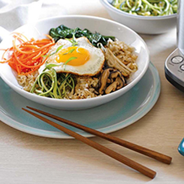
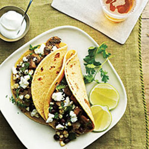
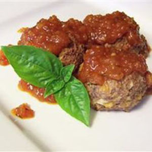
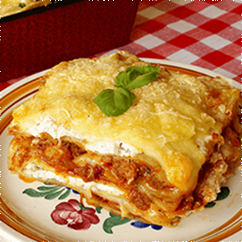

-

Vegetarian Bibimbap
×Vegetarian Bibimbap
Ingredients 2 tablespoons sesame oil
1 cup carrot matchsticks
1 cup zucchini matchsticks
1/2 (14 ounce) can bean sprouts, drained
6 ounces canned bamboo shoots, drained
1 (4.5 ounce) can sliced mushrooms, drained
1/8 teaspoon salt to taste
2 cups cooked and cooled rice
1/3 cup sliced green onions
2 tablespoons soy sauce
1/4 teaspoon ground black pepper
1 tablespoon butter
3 eggs
3 teaspoons sweet red chili sauce, or to tasteDirections
Heat sesame oil in a large skillet over medium heat; cook and stir carrot and zucchini in the hot oil until vegetables begin to soften, about 5 minutes. Stir in bean sprouts, bamboo shoots, and mushrooms. Cook and stir until carrots are tender, about 5 more minutes. Season to taste with salt and set vegetables aside.
Stir cooked rice, green onions, soy sauce, and black pepper in the same skillet until the rice is hot. In a separate skillet over medium heat, melt butter and gently fry eggs, turning once, until the yolks are still slightly runny but the egg whites are firm, about 3 minutes per egg.
To serve, divide hot cooked rice mixture between 3 serving bowls and top each bowl with 1/3 of the vegetable mixture and a fried egg. Serve sweet red chili sauce on the side for mixing into bibimbap.
Tip:
Aluminum foil helps keep food moist, ensures it cooks evenly, keeps leftovers fresh, and makes clean-up easy. -

Mushroom and Onion Vegetarian Tacos
×Mushroom and Onion Vegetarian Tacos
Ingredients 1 tablespoon vegetable oil
1 medium red onion, sliced
3 large fresh portabella mushrooms, sliced, cut in half, stems removed
2 tablespoons Old El Paso® taco seasoning mix
2 tablespoons water
8 Old El Paso® flour tortillas for soft tacos & fajitas
1 cup guacamole
1/2 cup sour cream
1/2 cup crumbled queso fresco cheeseDirections
In 12-inch nonstick skillet, heat oil over medium-high heat. Cook onion in oil, stirring occasionally, until brown. Add mushrooms. Cook 6 to 8 minutes or until tender. Reduce heat to low. Add taco seasoning mix and water. Cook about 5 minutes or until water is absorbed. Remove from heat.
Spoon filling on tortillas. Add toppings. Roll up tortillas.
Note:
Add extra protein to this dish with a side of Mexican-style beans. -

Vegetarian Sweet and Sour Meatballs
×Vegetarian Sweet and Sour Meatballs
Ingredients 4 eggs
1 cup shredded Cheddar cheese
1/2 cup cottage cheese
1/2 cup finely chopped onion
1 cup finely chopped pecans
1 teaspoon dried basil
1 1/2 teaspoons salt
1/4 teaspoon dried sage
2 cups Italian seasoned bread crumbs
1/4 cup vegetable oil
1/4 cup white vinegar
3/4 cup apricot jam
1 cup ketchup
1/4 cup minced onion
1 teaspoon dried oregano
1 dash hot pepper sauceDirections
Preheat the oven to 350 degrees F (175 degrees C).
In a large bowl, mix together the eggs, Cheddar cheese, and cottage cheese until well blended. Mix in 1/2 cup onion, pecans, basil, salt and sage. Stir in bread crumbs. Form the mixture into 2 inch balls, and place them in a 9x13 inch baking dish.
In another bowl, whisk together the vegetable oil, vinegar, apricot jam, ketchup, 1/4 cup onion, oregano and hot pepper sauce. Pour over meatballs.
Bake uncovered for 35 to 40 minutes in the preheated oven, until meatballs are firm, and sauce is thick and bubbly.
Tip: Aluminum foil can be used to keep food moist, cook it evenly, and make clean-up easier. -

Vegetarian Four Cheese Lasagna
×VVegetarian Four Cheese Lasagna
Ingredients 2 cups peeled and diced pumpkin
1 eggplant, sliced into 1/2 inch rounds
5 tomatoes
1 pint ricotta cheese
9 ounces crumbled feta cheese
2/3 cup pesto
2 eggs, beaten
salt and pepper to taste
1 (15 ounce) can tomato sauce
fresh pasta sheets
1 1/3 cups shredded mozzarella cheese
1 cup grated Parmesan cheeseDirections
Preheat oven to 350 degrees F (175 degrees C).
Place pumpkin on a baking sheet and roast in oven until browned and tender, about 30 minutes. Meanwhile, grill eggplant on a charcoal grill or fry in a skillet, turning once, until charred and tender, 10 to 15 minutes. Halve tomatoes and place on baking sheet in oven for last 15 minutes of pumpkin time; cook until tender and wrinkly.
In a medium bowl, stir together ricotta, feta, pesto, eggs, salt and pepper until well mixed. Fold roasted pumpkin into ricotta mixture.
Spoon half of the tomato sauce into a 9x13 baking dish. Lay two pasta sheets over the sauce. Arrange a single layer of eggplant slices over pasta and top with half the ricotta mixture. Cover with two more pasta sheets. Arrange the roasted tomatoes evenly over the sheets and spoon the remaining half the ricotta mixture over the tomatoes. Sprinkle with half the mozzarella. Top with remaining two sheets of pasta. Pour remaining tomato sauce over all and sprinkle with remaining mozzarella and Parmesan.
Bake in preheated oven 30 to 40 minutes, until golden and bubbly.
Tips :
Aluminum foil can be used to keep food moist, cook it evenly, and make clean-up easier.